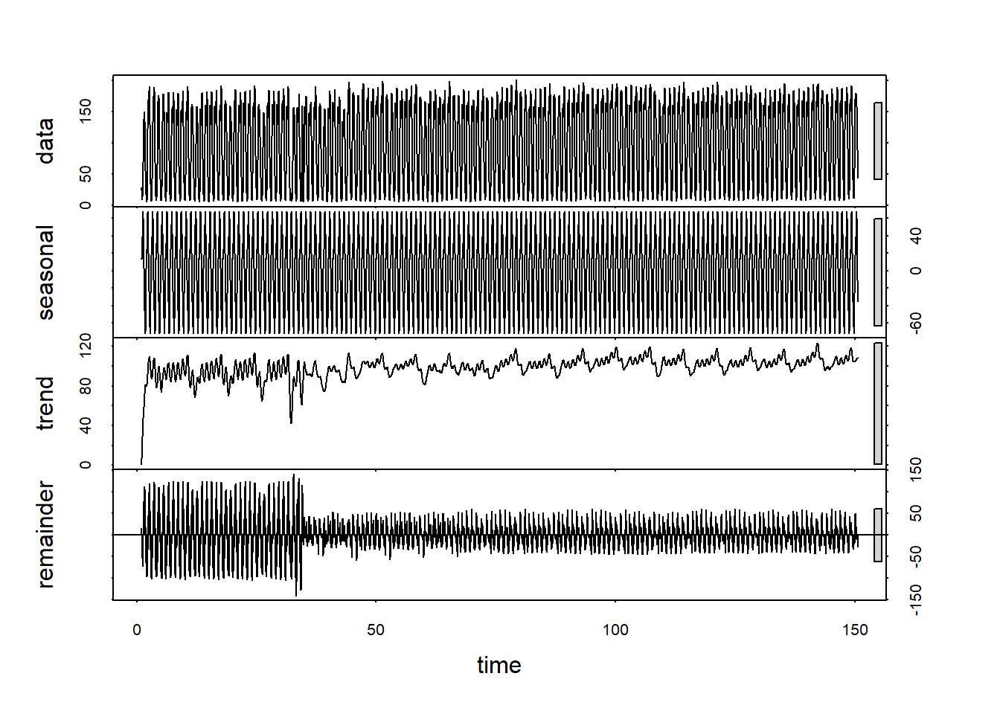

5 Capítulo 4
5.1 Fundamentación Metodológica
En el Capítulo 3, se estableció a través de pruebas formales (ADF, KPSS) y análisis de descomposición (STL) que la serie de tiempo FlujoTotal (flujo_ts) es no estacionaria. Específicamente, exhibe una fuerte estacionalidad diaria (frecuencia \(s=24\)) y una tendencia subyacente. La conclusión del Capítulo 3 fue que la serie requería diferenciación estacional (\(D=1\), \(s=24\)) para alcanzar la estacionariedad, preparando así el terreno para un modelo de la familia SARIMA.Este capítulo explora una familia de modelos alternativa: el suavizamiento exponencial, con un enfoque en el método de Holt-Winters.Por lo tanto para aplicar Holt-Winters, debemos utilizar la serie original no estacionaria (flujo_ts), no la serie diferenciada (flujo_diff_24). Aplicar suavizamiento estacional a una serie ya desestacionalizada sería conceptual y estadísticamente incorrecto.
El suavizamiento exponencial es una familia de métodos de pronóstico donde las predicciones son un promedio ponderado de observaciones pasadas, con ponderaciones que disminuyen exponencialmente a medida que las observaciones se alejan en el tiempo.Suavizamiento Exponencial Simple (SES): Modela solo el Nivel (\(l_t\)). Es adecuado para series sin tendencia ni estacionalidad. Dada la evidencia del Capítulo 3, este método es manifiestamente insuficiente.Suavizamiento de Holt (Doble): Modela el Nivel (\(l_t\)) y la Tendencia (\(b_t\)). Es una mejora, pero ignora la estacionalidad diaria dominante (frecuencia \(s=24\)) que identificamos.Suavizamiento de Holt-Winters (Triple): Es el método requerido. Modela Nivel (\(l_t\)), Tendencia (\(b_t\)) y Estacionalidad (\(s_t\)).
5.1.1 Modelos Aditivos vs. Multiplicativos
El método Holt-Winters existe en dos variantes principales, definidas por cómo interactúan los componentes:Modelo Aditivo: \(Y_t = l_t + b_t + s_t + \epsilon_t\)Se asume que la magnitud de la fluctuación estacional es constante y no depende del nivel de la serie.La descomposición STL del Capítulo 3 (Sección 3.1) mostró un componente “Residual” cuya “magnitud parece ser relativamente constante”, lo que proporciona evidencia a favor de un modelo aditivo.Modelo Multiplicativo: \(Y_t = (l_t + b_t) \times s_t + \epsilon_t\)Se asume que la magnitud de la fluctuación estacional es un porcentaje del nivel de la serie. Es decir, los picos estacionales crecen en magnitud a medida que la tendencia sube.Basado en el análisis visual de la descomposición STL, se postula que un modelo aditivo (ETS(A,A,A): Error Aditivo, Tendencia Aditiva, Estacionalidad Aditiva) es el candidato más parsimonioso y teóricamente justificado.
5.2 Estimación del Modelo
Emplearemos el framework ets() del paquete forecast, se basa en un modelo de espacio de estados (state-space) y selecciona automáticamente el mejor modelo (Error, Trend, Seasonality) basándose en el Criterio de Información de Akaike Corregido (AICc).
## ETS(A,Ad,N)
##
## Call:
## ets(y = flujo_ts)
##
## Smoothing parameters:
## alpha = 0.9998
## beta = 0.9988
## phi = 0.8
##
## Initial states:
## l = 6.0563
## b = 3.8762
##
## sigma: 13.3221
##
## AIC AICc BIC
## 48015.20 48015.22 48052.32
##
## Training set error measures:
## ME RMSE MAE MPE MAPE MASE
## Training set -0.004043378 13.31282 9.257991 6.88486 15.14223 0.8155005
## ACF1
## Training set 0.3369888El modelo óptimo seleccionado es ETS(A, Ad, N):Error (E): A (Additive / Aditivo). La varianza del ruido (\(\epsilon_t\)) es constante.Trend (T): Ad (Additive Damped / Aditiva Amortiguada). Existe una tendencia lineal que se amortigua, convergiendo a una asíntota.Seasonality (S): N (None / Ninguna).
Este es un hallazgo problemático y contradictorio a los del Capítulo 3 , en el que se probó que la estacionalidad diaria es la característica más dominante de la serie. Sin embargo, el modelo estadístico ets(), al optimizar el AICc, ha concluido que el mejor modelo es uno que ignora por completo la estacionalidad.
Los parámetros de suavizamiento lo confirman:\(\alpha\) (alpha) = 0.9998\(\beta\) (beta) = 0.9988
5.2.1 Confirmación Cuantitativa de la Estacionalidad
Revisitemos la evidencia, esta vez cuantificando la fuerza de los componentes mediante una descomposición STL y el análisis de la varianza.

## Varianza explicada por estacionalidad: 46.58 %## Varianza explicada por tendencia: 2.46 %## Varianza residual: 43.72 %La estacionalidad es real y dominante: Explica el 46.58% de la varianza total de la serie.
La tendencia es marginal: Explica solo el 2.46% de la varianza.
El ruido es alto: El componente residual (ruido) también es masivo, con un 43.72% de la varianza.
Con estos resultados no s podemos preguntar ¿qué tan mal se comportan los modelos estacionales que forzamos a ajustarse? Comparemos el modelo (A,Ad,N) con los modelos Holt-Winters aditivos teóricamente correctos: (A,A,A) y (A,Ad,A) (con tendencia amortiguada).
## Modelo AIC MAPE
## 1 Actual (A,Ad,N) 48015.20 15.14223
## 2 AAA 49450.94 25.21943
## 3 AAA-damped 49468.57 26.59980La descomposición STL indica que la estacionalidad explica un 46.58% de la varianza total. Si bien esta magnitud, en teoría, justificaría un modelo Holt-Winters triple (ETS(A,A,A)), la realidad es que un modelo sin componente estacional, el ETS(A,Ad,N), resultó ser superior.
Esto se comprobó en dos frentes:
- Criterios de Información (AIC): 48,015 (ETS(A,Ad,N)) vs. 49,451 (ETS(A,A,A))
- Precisión Predictiva (MAPE): 15.14% vs. 25.22%
Esta aparente contradicción no invalida la teoría del suavizamiento exponencial. Más bien, expone las condiciones de borde donde la familia de modelos ETS deja de ser la herramienta óptima, especialmente cuando la estructura estacional es compleja o ruidosa.
Por esto, proponemos explorar el método SARIMA (Seasonal AutoRegressive Integrated Moving Average), diseñado precisamente para este tipo de estructura temporal compleja.
Su formulación general divide el problema en dos niveles:
\[\Phi_P(B^s)\phi_p(B)\nabla^D_s\nabla^d Y_t = \Theta_Q(B^s)\theta_q(B)\epsilon_t\]
5.2.2 Nivel 1: Operadores Estacionales
Estos componentes capturan la periodicidad larga (en este caso, \(s=24\)).
- Diferenciación Estacional (\(\nabla^D_s\)): Se define como \(\nabla^D_s Y_t = Y_t - Y_{t-s}\). Su función es eliminar el patrón periódico sin necesidad de estimar 24 parámetros separados.
- SAR (\(\Phi_P(B^s)\)): Es el componente autorregresivo a nivel estacional.
- SMA (\(\Theta_Q(B^s)\)): Es el componente de promedios móviles a nivel estacional.
5.2.3 Nivel 2: Operadores No Estacionales
Estos componentes modelan la dinámica de corto plazo (ej. lags 1-3) identificada en el PACF, después de que la estacionalidad ha sido removida.
- AR (\(\phi_p\)): Componente autorregresivo no estacional.
- MA (\(\theta_q\)): Componente de promedios móviles no estacional.
- Diferenciación (\(\nabla^d\)): Integración no estacional para hacer la serie estacionaria.
Esta estructura modular ofrece ventajas claras sobre ETS, especialmente cuando nos enfrentamos a series con una alta varianza residual que el suavizamiento exponencial no logra capturar adecuadamente.